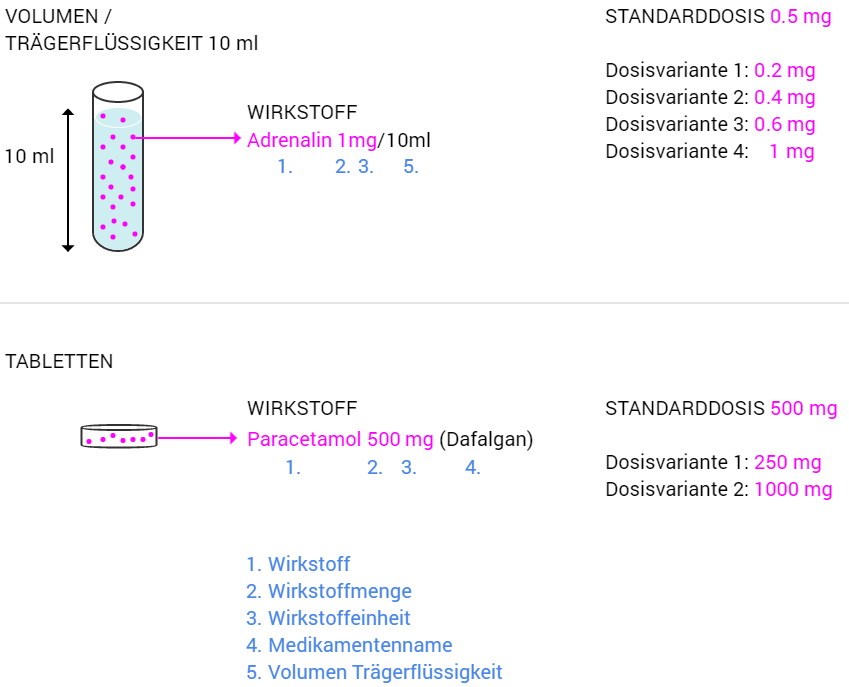
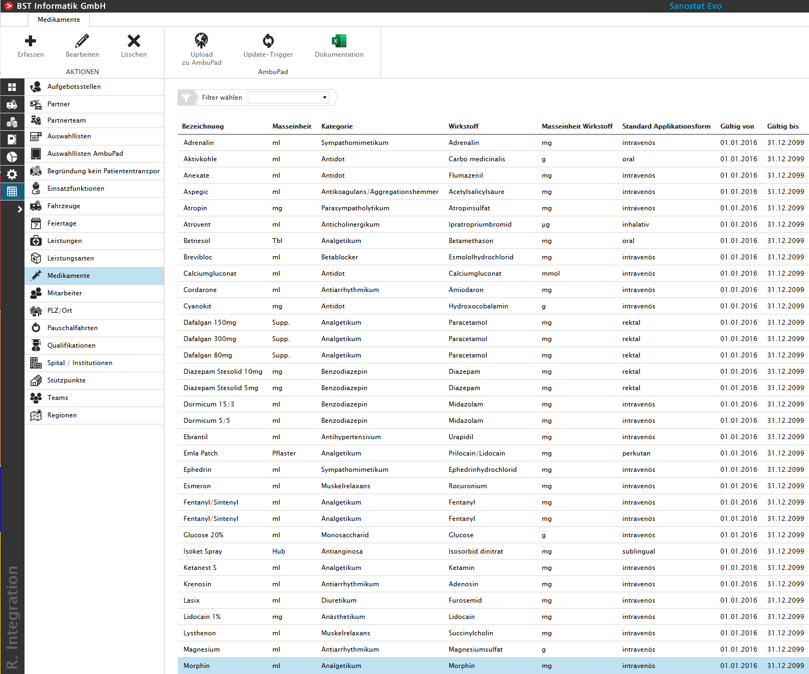
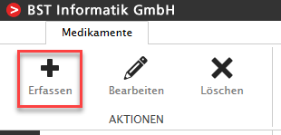
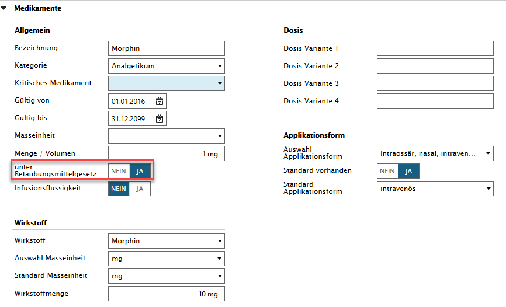
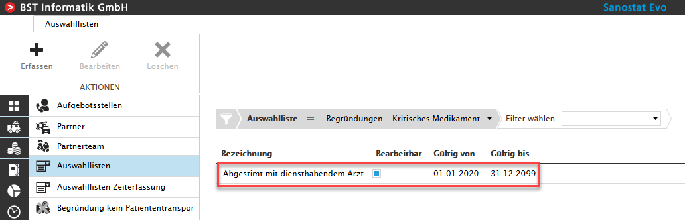

Medikamente erstellen
Der User mit der Rolle 'Stammdatenverwaltung' kann, wenn nötig, kann Medikamente erfassen und bei kritischen Medikamenten Begründungen verlangen.
Definition der Dosen eines Medikamentes

Erfassung eines Medikamentes
Ein neues Medikament kann in den Stammdaten in dem Reiter Medikamente erfasst werden.

Um ein neues Medikament zu erfassen, befindet sich in der linken oberen Ecke der Button für dass erfassen neue Medikamente.

Unter 'Allgemein' werden die ersten Angaben zum Medikament erfasst.
WICHTIG: Das Datum bei 'Gültig von' korrekt setzen, ansonsten steht das Medikament in der Einsatzerfassung nicht zur Verfügung.

Unter 'Wirkstoff' werden die Angaben zum Wirkstoff erfasst.
Unter 'Dosis' besteht die Möglichkeit 4 Dosis-Varianten zu erfassen. WICHTIG: Die Masseinheit MUSS zuvor beim Wirkstoff definiert werden und ist NUR für Kunden mit AmbulancePad relevant.
Unter 'Applikationsform' wird die Verabreichung des Medikamentes definiert und ob eine Standard Applikationsform verwendet werden soll.
Erfassung von kritischen Medikamenten
Um ein kritisches Medikament (Beispiel: Morphin) zu erfassen, kann in den Daten des Medikamentes der Slider 'unter Betäubungsmittelgesetz' auf JA gesetzt werden.

Wenn unter einem Medikament diese Auswahl aktiviert ist, muss in den Stammdaten/Auswahllisten die Liste 'Begründungen - Kritisches Medikament' mit Begründungen erfasst werden.
